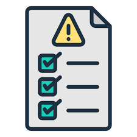
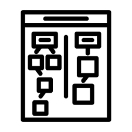
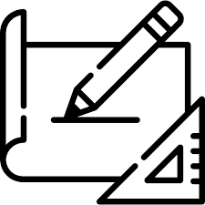

About me
My mission is to strive as an individual that is a leader, a friend, and someone that never stops learning and developing their craft in all facets of life including personal and professional. The goal is to build a career intersecting my abilities in both sales and software, where I can use both the technical skills of computer science and data analysis that solve real world problems, while bridging my sales experience to connect businesses and people with technology to create meaningful change. The role of a Business Development Manager, Solutions Engineer, or Pre Sales Consultant are areas that both intrigue me and suit my skill set that I continue to build. In these roles, I look to lead through authenticity, inspire through both my work and mentorship, and create long term value for clients, colleagues and me. When all things are said and done, I want to be remembered as an individual that bridged the gap between technological innovation and human connection, empowering future generations in all the areas I have touched in business, technology, and the community around me.
Skills
Solution Selling Sales · Direct B2C Sales · Product Marketing · RStudio / VSCode (Pandas, NumPy, Data Visualization & Analysis) · Python · Java · Git · Adobe Photoshop CS6 · Sony Vegas Pro 15
Problem Statement
One‑sentence summary: USC students seeking entry‑level tech jobs post grad face several challenges due to saturation in applicants, limited work field experience, and lack of industry knowlesge.
Full statement: xxx
Highlighted Projects
Problem Statement

A simple outlook on the problem at hand
Affinity Diagram

Affinity diagram for the problem at hand
Solution Sketches

Sketch illustrating problem statment issues that arise from the problem solutions for it and proposed website to help solve the following problem.
Academic Code Portfolio — Private Repositories
📌 Access Policy:
This repository is private under George Mason university policy and cannot be made public.
If you would like temporary viewing access, please contact me directly.
Downloadable Original R Code Files
*Only my authored code is shared publicly. No assignment instructions, datasets, or course-owned materials from GMU are included.*